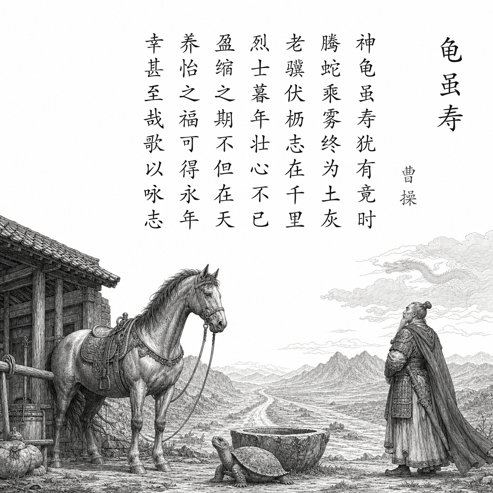

汉末 · 曹操
龟虽寿
神龟虽寿，犹有竟时；腾蛇乘雾，终为土灰。
老骥伏枥，志在千里；烈士暮年，壮心不已。
盈缩之期，不但在天；养怡之福，可得永年。
幸甚至哉，歌以咏志。
白话翻译
神龟纵然长寿，生命终有结束；腾蛇即使能乘雾飞行，最后也会化作尘土。
年老的千里马伏在槽边，志向仍在千里之外；有抱负的人到了晚年，雄心仍不会停止。
寿命长短不只由天决定，调养身心也可以使人延年。
真是幸运极了，就用歌声表达我的志向。
为什么写这首诗
曹操北征乌桓获胜后，北方局势大体稳定，但统一天下的目标尚未完成。面对生命有限，他没有消沉，而以“老骥”自比，强调人在暮年仍可保持进取雄心。
关于作者
曹操（155—220），字孟德，汉末政治家、军事家、文学家。其诗直面乱世，语言质朴刚健，既写战争民生，也写个人抱负，是建安文学的重要代表。